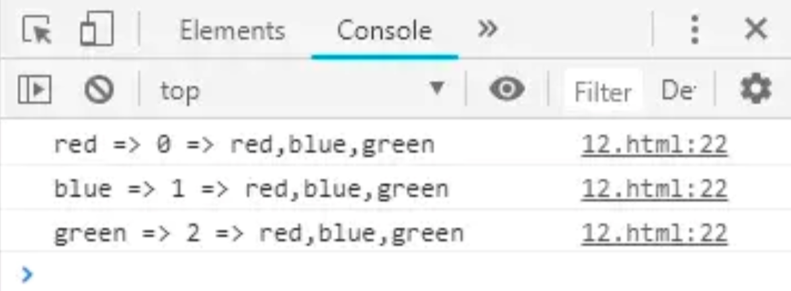

CONTENT OUTLINE
以下记录经常忘记又常用的
JS内置函数相关 资料 ：
Array Functions
1、Array.forEach()
描述：forEach()方法用于调用数组的每一个元素，并将元素传递给回调函数。
1 | array.forEach(function(currentValue, index, arr), thisValue) |
currentValue：必填，当前元素。
index：可选，当前元素的索引。
arr：可选，当前元素所属的数组对象。
thisValue：可选，传递给函数的值一般用this值，如果这个参数为空，”undefined”会传递给”this”值。（这个参数一般很少填）
1 | /* JS代码 */ |

上面的代码用了ES6语法，几乎等同于下面的代码
1 | /* JS代码 */ |
区别：其实，用 forEach() 主要是为了更方便的代替 for 对数组进行遍历。
用 for 遍历数组的方法
1 | /* JS代码 */ |
- forEach() 对于空数组是不会执行回调函数的。
- for可以用continue跳过循环中的一个迭代，forEach用continue会报错。
- forEach() 需要用 return 跳过循环中的一个迭代，跳过之后会执行下一个迭代。
如何跳过一次迭代
1 | /* JS代码 */ |
注意：
没有办法终止或跳出forEach循环，除非抛出一个异常。
如果需要终止或者跳出循环，建议用some()或者every()。
2、Array.shift()
shift() 方法用于把数组的第一个元素从其中删除，并返回第一个元素的值。
1 | arrayObject.shift() |
返回值：数组原来的第一个元素的值。
说明
- 如果数组是空的，那么 shift() 方法将不进行任何操作，返回 undefined 值。
- 请注意，该方法不创建新数组，而是直接修改原有的 arrayObject。
- 该方法会改变数组的长度。
3、Array.every() Array.some()
every()是对数组中每一项运行给定函数，如果该函数对每一项返回true,则返回true。
some()是对数组中每一项运行给定函数，如果该函数对任一项返回true，则返回true。
some一直在找符合条件的值，一旦找到，则不会继续迭代下去。
every从迭代开始，一旦有一个不符合条件，则不会继续迭代下去。
1 | var arr = [ 1, 2, 3, 4, 5, 6 ]; |
4、Array.slice()
描述：slice() 方法可从已有的数组中返回选定的元素。
返回一个新的数组，包含从 start 到 end （不包括该元素）的 arrayObject 中的元素。
该方法并不会修改数组，而是返回一个子数组。
注释：您可使用负值从数组的尾部选取元素。
注释：如果 end 未被规定，那么 slice() 方法会选取从 start 到数组结尾的所有元素。
语法
1 | arrayObject.slice(start,end) |
| 参数 | 描述 |
|---|---|
| start | 必需。规定从何处开始选取。如果是负数，那么它规定从数组尾部开始算起的位置。也就是说，-1 指最后一个元素，-2 指倒数第二个元素，以此类推。 |
| end | 可选。规定从何处结束选取。该参数是数组片断结束处的数组下标。如果没有指定该参数，那么切分的数组包含从 start 到数组结束的所有元素。如果这个参数是负数，那么它规定的是从数组尾部开始算起的元素。 |
5、String.prototype.indexOf()
描述：方法返回调用它的 String 对象中第一次出现的指定值的索引，从 fromIndex 处进行搜索。如果未找到该值，则返回 -1。
语法
1 | str.indexOf(searchValue [, fromIndex]) |
参数
searchValue要被查找的字符串值。
如果没有提供确切地提供字符串，searchValue 会被强制设置为
"undefined"， 然后在当前字符串中查找这个值。举个例子：
'undefined'.indexOf()将会返回0，因为undefined在位置0处被找到，但是'undefine'.indexOf()将会返回 -1 ，因为字符串'undefined'未被找到。fromIndex可选数字表示开始查找的位置。可以是任意整数，默认值为
0。如果
fromIndex的值小于0，或者大于str.length，那么查找分别从0和str.length开始。（译者注：fromIndex的值小于0，等同于为空情况；fromIndex的值大于str.length，那么结果会直接返回-1。）举个例子，
'hello world'.indexOf('o', -5)返回4，因为它是从位置0处开始查找，然后o在位置4处被找到。另一方面，'hello world'.indexOf('o', 11)（或fromIndex填入任何大于11的值）将会返回-1，因为开始查找的位置11处，已经是这个字符串的结尾了。
返回值
查找的字符串 searchValue 的第一次出现的索引，如果没有找到，则返回 -1。
若被查找的字符串 searchValue 是一个空字符串，将会产生“奇怪”的结果。如果 fromIndex 值为空，或者 fromIndex 值小于被查找的字符串的长度，返回值和以下的 fromIndex 值一样
6、Array.prototype.splice()
描述
splice() 方法向/从数组中添加/删除项目，然后返回被删除的项目。
1 | array.splice(start[, deleteCount[, item1[, item2[, ...]]]]) |
参数
start指定修改的开始位置（从0计数）。如果超出了数组的长度，则从数组末尾开始添加内容；如果是负值，则表示从数组末位开始的第几位（从-1计数，这意味着-n是倒数第n个元素并且等价于
array.length-n）；如果负数的绝对值大于数组的长度，则表示开始位置为第0位。deleteCount可选整数，表示要移除的数组元素的个数。
如果
deleteCount大于start之后的元素的总数，则从start后面的元素都将被删除（含第start位）。如果
deleteCount被省略了，或者它的值大于等于array.length - start(也就是说，如果它大于或者等于start之后的所有元素的数量)，那么start之后数组的所有元素都会被删除。如果
deleteCount是 0 或者负数，则不移除元素。这种情况下，至少应添加一个新元素。item1, item2, *...*可选要添加进数组的元素,从
start位置开始。如果不指定，则splice()将只删除数组元素。
返回值
由被删除的元素组成的一个数组。如果只删除了一个元素，则返回只包含一个元素的数组。如果没有删除元素，则返回空数组。
注意
该方法会改变原始数组。
7、Array.prototype.map()
map() 方法创建一个新数组(未修改原数组)，其结果是该数组中的每个元素是调用一次提供的函数后的返回值。
语法
1 | var new_array = arr.map(function callback(currentValue[, index[, array]]) { |
参数
callback
生成新数组元素的函数，使用三个参数：
currentValuecallback数组中正在处理的当前元素。index可选callback数组中正在处理的当前元素的索引。array可选map方法调用的数组。
thisArg可选
执行 callback 函数时值被用作this。
描述
map 方法会给原数组中的每个元素都按顺序调用一次 callback 函数。callback 每次执行后的返回值（包括 undefined）组合起来形成一个新数组。 callback 函数只会在有值的索引上被调用；那些从来没被赋过值或者使用 delete 删除的索引则不会被调用。
因为map生成一个新数组，当你不打算使用返回的新数组却使用map是违背设计初衷的，请用forEach或者for-of替代。你不该使用map: A)你不打算使用返回的新数组，或/且 B) 你没有从回调函数中返回值。
callback 函数会被自动传入三个参数：数组元素，元素索引，原数组本身。
如果 thisArg 参数提供给map，则会被用作回调函数的this值。否则undefined会被用作回调函数的this值。this的值最终相对于callback函数的可观察性是依据the usual rules for determining the this seen by a function决定的
map不修改调用它的原数组本身（当然可以在 callback 执行时改变原数组）
map 方法处理数组元素的范围是在 callback 方法第一次调用之前就已经确定了。调用map方法之后追加的数组元素不会被callback访问。如果存在的数组元素改变了，那么传给callback的值是map访问该元素时的值。在map函数调用后但在访问该元素前，该元素被删除的话，则无法被访问到。
- 求数组中每个元素的平方根
- 使用 map 重新格式化数组中的对象
- 使用一个包含一个参数的函数来mapping(构建)一个数字数组
- 一般的
map方法(在一个String上使用 map 方法获取字符串中每个字符所对应的 ASCII 码)
8、Array.prototype.filter()
filter() 方法创建一个新数组, 其包含通过所提供函数实现的测试的所有元素。
返回一个新的、由通过测试的元素组成的数组，如果没有任何数组元素通过测试，则返回空数组。
语法
1 | var newArray = arr.filter(callback(element[, index[, array]])[, thisArg]) |
参数
callback
用来测试数组的每个元素的函数。返回 true 表示该元素通过测试，保留该元素，false 则不保留。它接受以下三个参数：
element数组中当前正在处理的元素。
index可选正在处理的元素在数组中的索引。
array可选调用了
filter的数组本身。
thisArg可选
执行 callback 时，用于 this 的值。
描述
filter 为数组中的每个元素调用一次 callback 函数，并利用所有使得 callback 返回 true 或等价于 true 的值的元素创建一个新数组。callback 只会在已经赋值的索引上被调用，对于那些已经被删除或者从未被赋值的索引不会被调用。那些没有通过 callback 测试的元素会被跳过，不会被包含在新数组中。
callback 被调用时传入三个参数：
- 元素的值
- 元素的索引
- 被遍历的数组本身
如果为 filter 提供一个 thisArg 参数，则它会被作为 callback 被调用时的 this 值。否则，callback 的 this 值在非严格模式下将是全局对象，严格模式下为 undefined。callback 函数最终观察到的 this 值是根据通常函数所看到的 “this”的规则确定的。
filter 不会改变原数组，它返回过滤后的新数组。
filter 遍历的元素范围在第一次调用 callback 之前就已经确定了。在调用 filter 之后被添加到数组中的元素不会被 filter 遍历到。如果已经存在的元素被改变了，则他们传入 callback 的值是 filter 遍历到它们那一刻的值。被删除或从来未被赋值的元素不会被遍历到。
9、Array.prototype.reduce()
方法对数组中的每个元素执行一个由您提供的reducer函数(升序执行)，将其结果汇总为单个返回值。
语法
1 | arr.reduce(callback(accumulator, currentValue[, index[, array]])[, initialValue]) |
reducer 函数接收4个参数:
- Accumulator (acc) (累计器)
- Current Value (cur) (当前值)
- Current Index (idx) (当前索引)
- Source Array (src) (源数组)
reducer 函数的返回值分配给累计器，该返回值在数组的每个迭代中被记住，并最后成为最终的单个结果值。
10、Array.prototype.find()
1 | find()` 方法返回数组中满足提供的测试函数的第一个元素的值。否则返回 `undefined |
11、Array.prototype.findIndex()
它返回数组中找到的元素的值，而不是其索引。其他同上
12、Array.prototype.includes()
includes() 方法用来判断一个数组是否包含一个指定的值，根据情况，如果包含则返回 true，否则返回false。
1 | const array1 = [1, 2, 3]; |
13、Array.from()
Array.from() 方法从一个类似数组或可迭代对象创建一个新的，浅拷贝的数组实例。
1 | console.('foo')); |
Object Function
1. Object.assign()
将所有可枚举的自身属性的值从一个或多个源对象复制到目标对象。
1 | const target = { a: 1, b: 2 }; |
2. Object.create()
用指定的原型对象和属性创建一个新对象。
1 | const person = { |
3. Object.keys()
返回一个由一个给定对象的自身可枚举属性组成的数组，数组中属性名的排列顺序和正常循环遍历该对象时返回的顺序一致 。
1 | // simple array |
4. Object.values()
方法返回一个给定对象自身的所有可枚举属性值的数组，值的顺序与使用for...in循环的顺序相同 ( 区别在于 for-in 循环枚举原型链中的属性 )。
1 | var obj = { foo: 'bar', baz: 42 }; |
5. Object.entries()
返回一个给定对象自身可枚举属性的键值对数组，其排列与使用 for...in 循环遍历该对象时返回的顺序一致（区别在于 for-in 循环还会枚举原型链中的属性）。
1 | const object1 = { |
6. 删除对象属性
通过delete操作符, 可以实现对对象属性的删除操作, 返回值是布尔
注意：核心是 已声明的对象不可删除, 对象中的对象属性可以删除
删除变量
1 | var name ='zs' //已声明的变量 |
删除函数
1 | var fn = function(){} //已声明的函数 |
删除数组
1 | var arr = ['1','2','3'] ///已声明的数组 |
删除对象
1 | var person = { |
7. Object.is()
Object.is() 方法判断两个值是否为同一个值。如果满足以下条件则两个值相等:
与== 运算不同。 == 运算符在判断相等前对两边的变量(如果它们不是同一类型) 进行强制转换 (这种行为的结果会将 "" == false 判断为 true), 而 Object.is不会强制转换两边的值。
与=== 运算也不相同。 === 运算符 (也包括 == 运算符) 将数字 -0 和 +0 视为相等 ，而将Number.NaN 与NaN视为不相等.
将给定描述符描述的命名属性添加到对象。
将给定描述符描述的命名属性添加到对象。
冻结对象。其他代码无法删除或更改其属性。
从可迭代的[key, value]对中返回一个新对象。（这是的反向 Object.entries）。
Object.getOwnPropertyDescriptor()
返回对象的命名属性的属性描述符。
Object.getOwnPropertyDescriptors()
返回一个包含对象自身所有属性描述符的对象。
返回一个数组，其中包含给定对象自己的所有可枚举和不可枚举属性的名称。
Object.getOwnPropertySymbols()
返回直接在给定对象上找到的所有符号属性的数组。
返回prototype指定对象的。
确定是否允许扩展对象。
确定对象是否冻结。
确定对象是否密封。
防止对象的任何扩展。
防止其他代码删除对象的属性。
设置对象的原型（其内部[[Prototype]]属性）。
指定创建对象原型的函数。
String Functions
Problems
一、 JS中判断某个字符串是否包含另一个字符串的五种方法
String对象的方法
方法一: indexOf() (推荐)
1 | var str = "123" |
indexOf() 方法可返回某个指定的字符串值在字符串中首次出现的位置。如果要检索的字符串值没有出现，则该方法返回 -1。
方法二:match()
1 | var str = "123" |
match() 方法可在字符串内检索指定的值，或找到一个或多个正则表达式的匹配。
方法三: search()
1 | var str = "123" |
search() 方法用于检索字符串中指定的子字符串，或检索与正则表达式相匹配的子字符串。如果没有找到任何匹配的子串，则返回 -1。
RegExp对象的方法
方法四: test()
1 | var str = "123" |
test() 方法用于检索字符串中指定的值。返回 true 或 false。
方法五:exec()
1 | var str = "123" |
exec() 方法用于检索字符串中的正则表达式的匹配。返回一个数组，其中存放匹配的结果。如果未找到匹配，则返回值为 null。
二、原生JS清空数组的三种方式
1. splice函数
1 | arrayObject.splice(index,howmany,element1,.....,elementX) |
index：必选，规定从何处添加/删除元素。
howmany：必选，规定应该删除多少元素。未规定此参数，则删除从 index 开始到原数组结尾的所有元素。
element1:可选，规定要添加到数组的新元素。
1 | var arr = [1,2,3,4]; |
2. 给数组的length赋值为0
该方法保留了数组其它属性。
赋予数组的长度小于本身的长度，数组中后面的元素将被截断。
赋予数组的长度大于本身的长度，将扩展数组长度，多的元素为undefined。
1 | var arr = [1,2,3,4]; |
目前 Prototype中数组的 clear 和mootools库中数组的 empty 使用这种方式清空数组。
其它语言如Java，其数组的length是只读的，不能被赋值。如
1 | int[] ary = {1,2,3,4}; |
Java中会报错，编译通不过。
3. 直接赋予新数组 []
这种方式为将arr重新赋值为空数组，之前的数组如果没有被引用，将等待垃圾回收。
1 | var arr = [1,2,3,4]; |
三、判断是否为字符串
1. 基本方法
1 | typeof(str)=='string' |
2. 利用JS原生函数
1 | Object.prototype.toString // ƒ toString() { [native code] } |
在
Object.prototype这个this（上下文环境）中执行toString原生函数，会把里边的环境变量类型打印出来。Object.prototype.toString()–>执行结果–>"[object Object]"如果我们改变this（上下文环境），就能打印出当前环境变量类型，根据这个类型来判断。
Object.prototype.toString.call(str)–>执行结果–>"[object String]"
四、字符串转为数字的三种方法
三种方法：转换函数、强制类型转换、利用js变量弱类型转换
1、转换函数：
js提供了 parseInt() 和 parseFloat() 两个转换函数。前者把值转换成整数，后者把值转换成浮点数。只有对String类型调用这些方法，这两个函数才能正确运行；对其他类型返回的都是NaN(Not a Number)。
一些示例 代码如下:
1 | parseInt("1234blue"); //returns 1234 |
parseInt()方法还有基模式，可以把二进制、八进制、十六进制或其他任何进制的字符串转换成整数。基是由parseInt()方法的第二个参数指定的，示例如下：
代码如下:
1 | parseInt("AF", 16); //returns 175 |
parseFloat()方法与parseInt()方法的处理方式相似。
使用parseFloat()方法的另一不同之处在于，字符串必须以十进制形式表示浮点数，parseFloat()没有基模式。
下面是使用parseFloat()方法的示例代码如下:
1 | parseFloat("1234blue"); //returns 1234.0 |
2、 强制类型转换
还可使用强制类型转换（type casting）处理转换值的类型。使用强制类型转换可以访问特定的值，即使它是另一种类型的。
ECMAScript中可用的3种强制类型转换如下：
- Boolean(value)——把给定的值转换成Boolean型；
- Number(value)——把给定的值转换成数字（可以是整数或浮点数）；
- String(value)——把给定的值转换成字符串。
用这三个函数之一转换值，将创建一个新值，存放由原始值直接转换成的值。这会造成意想不到的后果。
当要转换的值是至少有一个字符的字符串、非0数字或对象时，Boolean()函数将返回true。如果该值是空字符串、数字0、undefined或null，它将返回false。
可以用下面的代码段测试Boolean型的强制类型转换，代码如下:
1 | Boolean(""); //false – empty string |
Number()的强制类型转换与parseInt()和parseFloat()方法的处理方式相似，只是它转换的是整个值，而不是部分值。示例如下：
1 | Number(false) 0 |
最后一种强制类型转换方法String()是最简单的，示例如下：
代码如下:
1 | var s1 = String(null); //"null" |
3、利用js变量弱类型转换
代码如下:
1 | <script> |
上例利用了js的弱类型的特点，只进行了算术运算，实现了字符串到数字的类型转换，不过这个方法还是不推荐的
五、Javascript 遍历对象的方法
1、 for......in
1 | const obj = { |
2、Object.keys(obj) 和 Object.values(obj)
3、使用Object.getOwnPropertyNames(obj)
六、JS中动态追加属性
只有一种方式
1 | var data = {}; |
七、Js查找数组中的元素
1、数组 Array.indexOf() 方法
1 | arr.indexOf(searchElement[, fromIndex]) |
2、数组 Array.find() 方法
1 | arr.find(callback[, thisArg]) |
3、Array.includes() 方法
1 | arr.includes(valueToFind[, fromIndex]) |
八、Js 合并数组
需要将两个数组合并成为一个的情况：
1 | var a = [1,2,3]; |
1、concat
连接两个或更多的数组，并返回结果
1 | var c = a.concat(b); //c=[1,2,3,4,5,6]; |
这里有一个问题，concat方法连接a、b两个数组后，a、b两个数组的数据不变，同时会返回一个新的数组。这样当我们需要进行多次的数组合并时，会造成很大的内存浪费，如果是数据量比较小的时候，还可以勉强用，如果数据量大的时候，这个就不妥了，所以这个方法肯定不是最好的
2、for循环
大概的思路是：遍历其中一个数组，把该数组中的所有元素依次添加到另外一个数组中。直接上代码：
1 | for( var i in b){ |
这样的写法可以解决第一种方案中对内存的浪费，但是会有另一个问题：丑！这么说不是没有道理，如果能只用一行代码就搞定，岂不快哉~
3、apply
函数的apply方法有一个特性，那就是 func.apply(obj,argv) ，argv是一个数组。所以我们可以利用这点，直上代码：
1 | a.push.apply(a,b); |
调用a.push这个函数实例的apply方法，同时把，b当作参数传入，这样a.push这个方法就会遍历b数组的所有元素，达到合并的效果。
这里可能有点绕，我们可以把b看成[4,5,6]，变成这样：
1 | a.push.apply(a,[4,5,6]); |
另外，还要注意两个小问题：
1）以上3种合并方法并没有考虑过a、b两个数组谁的长度更小。
所以好的做法是预先判断a、b两个数组哪个更大，然后使用大数组合并小数组，这样就减少了数组元素操作的次数！
2）有时候我们不希望原数组（a、b）改变，这时就只能使用concat了